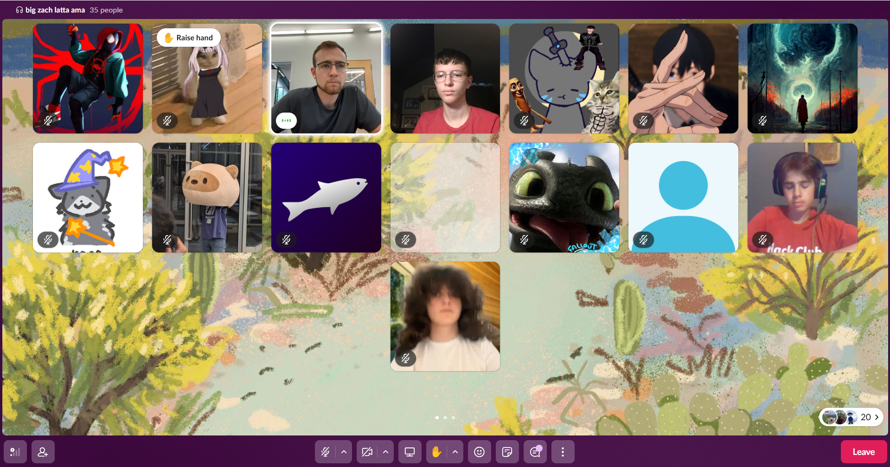
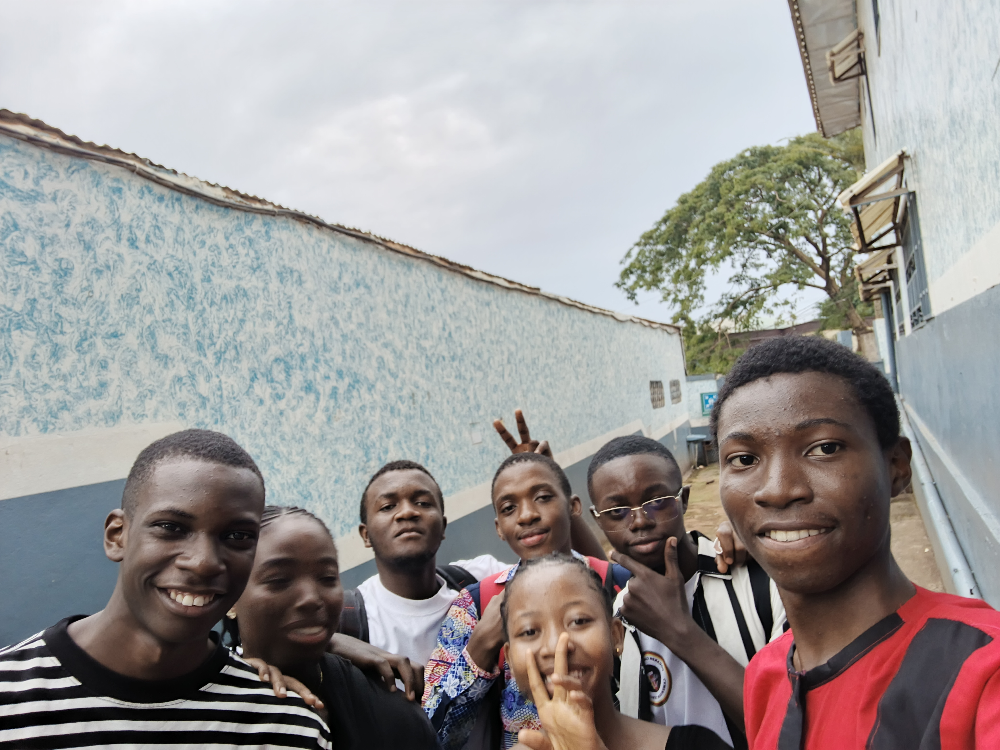
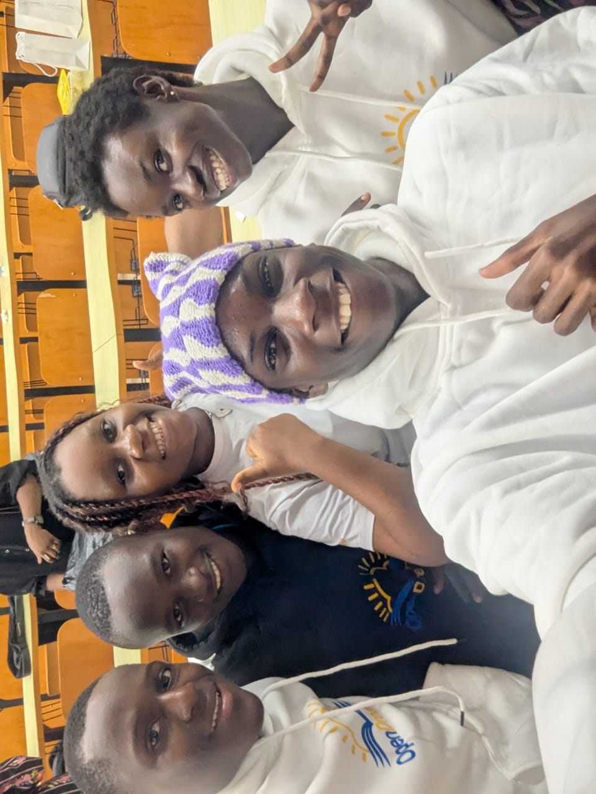

Hello, I'm Alan!
Social interactions are the core of social life. Discover how this persona interacts with his world and look through the lense of a human world.
I am Onana Alan Christopher, and I am a 16 years old Cameroonian Upper Sixth Science student at Tsimi Evouna Bilingual Institute. This is the place where I spend most of my active days, as we have 9 hours of class hours per day! It's my fifth year at the school. I came from St. Benedict Catholic Bilingual College, where I was a very timide and quiet student. The type of student with no troubles with anyone in class, but that is so passive.
One day, my family had to move to a new house, and consequently, I changed school too. I stepped in this quite unfamiliar area. The class was not unfamiliar because of a different learning curriculum, but because of a completely new atmosphere. Though I stepped into form 3, I felt this childish, and open atmosphere we can feel when entering form 1.
Eveyone seemed to know each other, except from the few new students we were. That did not last long. On the second week only, I knew everyone by their name, and I already had a friend group. How did the connection settle so fast ? The environment. The students in that class provided such an inclusive environment, that it permitted everyone to fill at ease in class.
For once in my life my extrovert side, which was previously barely visible, became 100% of me. Since that 2nd week of school, I never felt myself timide in anyway, and I did not want anyone to fill like me in my first secondary school years. When I am in a new place, I try talking to everyone, to make them feel as comfortable as my F3 was for me.
Some would say I was with the right people, others would say that my social skills just increased (I was reading books to become more social during that period by the way), but what matters the most is that I've grown in that same spirit and I have many more friends I can count on in my surrounding.
I will leave you with the images I took thanks to this wonderful spirit I continue carrying with me.

Here, I was in a huddle (call) with some members of the Hack Club for a lockin session, and a debate. How exciting it was!
Here Is a picture of me and some friends I made at the Open Dreams Summer Academy.


Here is still a photo at the Summer Academy, at the graduation cermony. I had to say Good bye to the new friends I had. So I took this last selfie